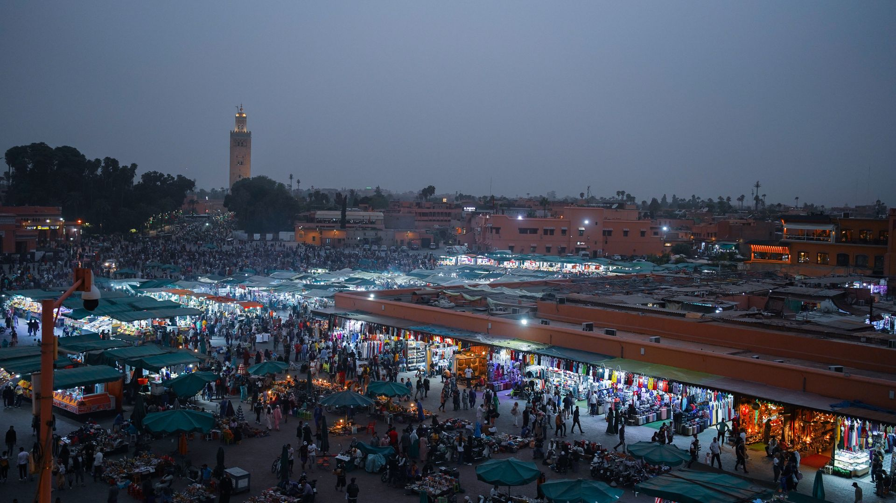

Contatta Favorites Morocco Tours
Contatti: organizza il tuo tour privato in Marocco
Raccontaci le tue date e le tue idee: il nostro team locale creerà il tuo tour privato in Marocco e ti invierà un preventivo gratuito e senza impegno. Il modo più veloce per contattarci è WhatsApp, 24/7.
- Preventivo gratuito
- Senza impegno
- WhatsApp 24/7
Domande frequenti
Prima di contattarci
Come posso contattare Favorites Morocco Tours?
Il modo più veloce è WhatsApp al +212 786 278 943, disponibile 24/7. Puoi anche scrivere a favoritesmoroccotours@gmail.com o usare il modulo di questa pagina.
Il preventivo è gratuito?
Sì. Prepariamo gratuitamente e senza impegno un itinerario e un prezzo personalizzati.
Come confermo la prenotazione?
Confermi il tuo tour privato con un acconto del 20%. Il resto si paga in Marocco durante il viaggio.
Posso modificare l’itinerario?
Certo. Tutti i nostri tour sono privati e su misura, quindi adattiamo percorso, alloggi e ritmo a te.
Qual è la politica di cancellazione?
La cancellazione è gratuita fino a 14 giorni prima della partenza.